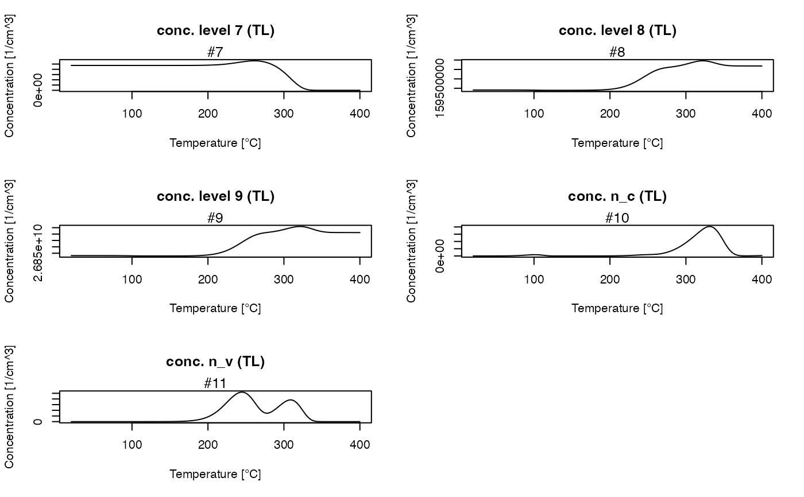
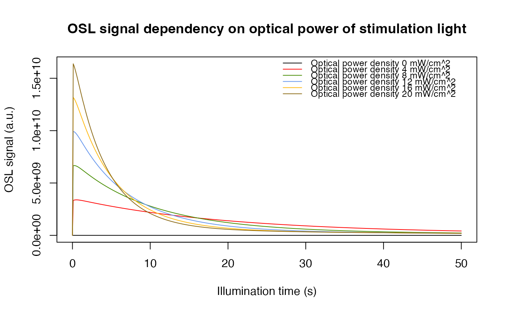
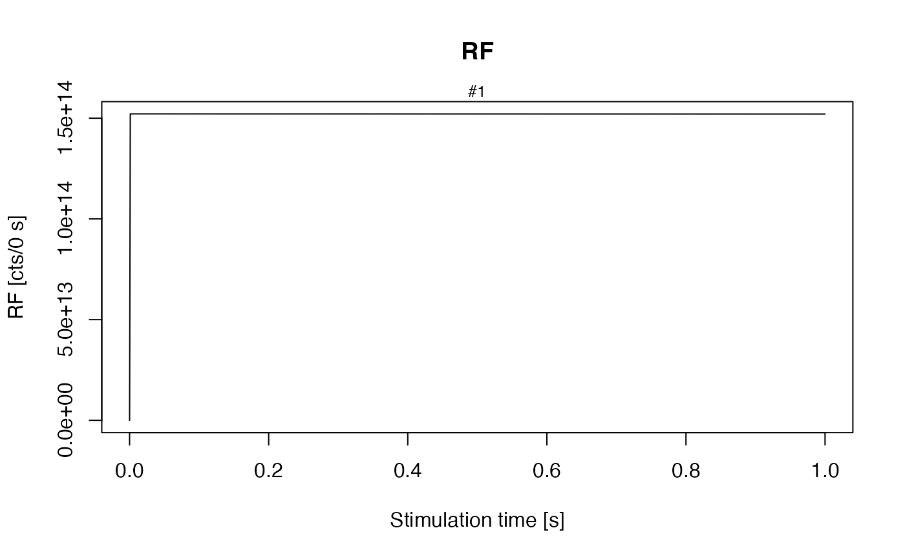

This function models luminescence signals for quartz based on published physical models.
It is possible to simulate TL, (CW-) OSL, RF measurements in a arbitrary sequence. This
sequence is definded as a list of certain abrivations. Furthermore it is possible to
load a sequence direct from the Riso Sequence Editor.
The output is an RLum.Analysisobject and so the plots are done
by the plot_RLum.Analysis function. If a SAR sequence is simulated the plot output can be disabled and SAR analyse functions
can be used.
model_LuminescenceSignals( model, sequence, lab.dose_rate = 1, simulate_sample_history = FALSE, plot = TRUE, verbose = TRUE, show_structure = FALSE, own_parameters = NULL, own_state_parameters = NULL, own_start_temperature = NULL, ... )
Arguments
| model |
|
|---|---|
| sequence |
|
| lab.dose_rate |
|
| simulate_sample_history |
|
| plot |
|
| verbose |
|
| show_structure |
|
| own_parameters |
For further details see Bailey 2001, Wintle 1975, vignette "RLumModel - Using own parameter sets" and example 3. |
| own_state_parameters |
|
| own_start_temperature |
|
| ... | further arguments and graphical parameters passed to
|
Value
This function returns an RLum.Analysis object with all TL, (LM-) OSL and RF/RL steps
in the sequence. Every entry is an RLum.Data.Curve object and can be plotted, analysed etc. with
further RLum-functions.
Details
Defining a sequence
| Arguments | Description | Sub-arguments |
| TL | thermally stimulated luminescence | 'temp begin' [\(^{\circ}\)C], 'temp end' [\(^{\circ}\)C], 'heating rate' [\(^{\circ}\)C/s] |
| OSL | optically stimulated luminescence | 'temp' [\(^{\circ}\)C], 'duration' [s], 'optical_power' [%] |
| ILL | illumination | 'temp' [\(^{\circ}\)C], 'duration' [s], 'optical_power' [%] |
| LM_OSL | linear modulated OSL | 'temp' [\(^{\circ}\)C], 'duration' [s], optional: 'start_power' [%], 'end_power' [%] |
| RL/RF | radioluminescence | 'temp' [\(^{\circ}\)C], 'dose' [Gy], 'dose_rate' [Gy/s] |
| RF_heating | RF during heating/cooling | 'temp begin' [\(^{\circ}\)C], 'temp end' [\(^{\circ}\)C], 'heating rate' [\(^{\circ}\)C/s], 'dose_rate' [Gy/s] |
| IRR | irradiation | 'temp' [\(^{\circ}\)C], 'dose' [Gy], 'dose_rate' [Gy/s] |
| CH | cutheat | 'temp' [\(^{\circ}\)C], optional: 'duration' [s], 'heating_rate' [\(^{\circ}\)C/s] |
| PH | preheat | 'temp' [\(^{\circ}\)C], 'duration' [s], optional: 'heating_rate' [\(^{\circ}\)C/s] |
| PAUSE | pause | 'temp' [\(^{\circ}\)C], 'duration' [s] |
Note: 100 % illumination power equates to 20 mW/cm^2
Defining a SAR-sequence
| Abrivation | Description | examples |
| RegDose | Dose points of the regenerative cycles [Gy] | c(0, 80, 140, 260, 320, 0, 80) |
| TestDose | Test dose for the SAR cycles [Gy] | 50 |
| PH | Temperature of the preheat [\(^{\circ}\)C] | 240 |
| CH | Temperature of the cutheat [\(^{\circ}\)C] | 200 |
| OSL_temp | Temperature of OSL read out [\(^{\circ}\)C] | 125 |
| OSL_duration | Duration of OSL read out [s] | default: 40 |
| Irr_temp | Temperature of irradiation [\(^{\circ}\)C] | default: 20 |
| PH_duration | Duration of the preheat [s] | default: 10 |
| dose_rate | Dose rate of the laboratory irradiation source [Gy/s] | default: 1 |
| optical_power | Percentage of the full illumination power [%] | default: 90 |
| Irr_2recover | Dose to be recovered in a dose-recovery-test [Gy] | 20 |
Function version
0.1.5
How to cite
Friedrich, J., Kreutzer, S., 2021. model_LuminescenceSignals(): Model Luminescence Signals. Function version 0.1.5. In: Friedrich, J., Kreutzer, S., Schmidt, C., 2021. RLumModel: Solving Ordinary Differential Equations to Understand Luminescence. R package version 0.2.8. https://CRAN.R-project.org/package=RLumModel
References
Bailey, R.M., 2001. Towards a general kinetic model for optically and thermally stimulated luminescence of quartz. Radiation Measurements 33, 17-45.
Bailey, R.M., 2002. Simulations of variability in the luminescence characteristics of natural quartz and its implications for estimates of absorbed dose. Radiation Protection Dosimetry 100, 33-38.
Bailey, R.M., 2004. Paper I-simulation of dose absorption in quartz over geological timescales and it simplications for the precision and accuracy of optical dating. Radiation Measurements 38, 299-310.
Friedrich, J., Kreutzer, S., Schmidt, C., 2016. Solving ordinary differential equations to understand luminescence: 'RLumModel', an advanced research tool for simulating luminescence in quartz using R. Quaternary Geochronology 35, 88-100.
Friedrich, J., Pagonis, V., Chen, R., Kreutzer, S., Schmidt, C., 2017: Quartz radiofluorescence: a modelling approach. Journal of Luminescence 186, 318-325.
Pagonis, V., Chen, R., Wintle, A.G., 2007: Modelling thermal transfer in optically stimulated luminescence of quartz. Journal of Physics D: Applied Physics 40, 998-1006.
Pagonis, V., Wintle, A.G., Chen, R., Wang, X.L., 2008. A theoretical model for a new dating protocol for quartz based on thermally transferred OSL (TT-OSL). Radiation Measurements 43, 704-708.
Pagonis, V., Lawless, J., Chen, R., Anderson, C., 2009. Radioluminescence in Al2O3:C - analytical and numerical simulation results. Journal of Physics D: Applied Physics 42, 175107 (9pp).
Soetaert, K., Cash, J., Mazzia, F., 2012. Solving differential equations in R. Springer Science & Business Media.
Wintle, A., 1975. Thermal Quenching of Thermoluminescence in Quartz. Geophysical Journal International 41, 107-113.
See also
plot, RLum,
read_SEQ2R
Author
Johannes Friedrich, University of Bayreuth (Germany), Sebastian Kreutzer, IRAMAT-CRP2A, Universite Bordeaux Montaigne (France)
Examples
##================================================================## ## Example 1: Simulate Bailey2001 ## (cf. Bailey, 2001, Fig. 1) ##================================================================## ##set sequence with the following steps ## (1) Irradiation at 20 deg. C with a dose of 10 Gy and a dose rate of 1 Gy/s ## (2) TL from 20-400 deg. C with a rate of 5 K/s sequence <- list( IRR = c(20, 10, 1), TL = c(20, 400, 5) ) ##model sequence model.output <- model_LuminescenceSignals( sequence = sequence, model = "Bailey2001" )#> #> [.translate_Sequence()] #> >> Simulate sequence #> | | | 0% | |=================================== | 50% | |======================================================================| 100%##get all TL concentrations TL_conc <- get_RLum(model.output, recordType = "(TL)", drop = FALSE) plot_RLum(TL_conc)##plot 110 deg. C trap concentration TL_110 <- get_RLum(TL_conc, recordType = "conc. level 1") plot_RLum(TL_110)##============================================================================## ## Example 2: compare different optical powers of stimulation light ##============================================================================## # call function "model_LuminescenceSignals", model = "Bailey2004" # and simulate_sample_history = FALSE (default), # because the sample history is not part of the sequence # the optical_power of the LED is varied and then compared. optical_power <- seq(from = 0,to = 100,by = 20) model.output <- lapply(optical_power, function(x){ sequence <- list(IRR = c(20, 50, 1), PH = c(220, 10, 5), OSL = c(125, 50, x) ) data <- model_LuminescenceSignals( sequence = sequence, model = "Bailey2004", plot = FALSE, verbose = FALSE ) return(get_RLum(data, recordType = "OSL$", drop = FALSE)) }) ##combine output curves model.output.merged <- merge_RLum(model.output) ##plot plot_RLum( object = model.output.merged, xlab = "Illumination time [s]", ylab = "OSL signal [a.u.]", main = "OSL signal dependency on optical power of stimulation light", legend.text = paste("Optical power density", 20*optical_power/100, "mW/cm^2"), combine = TRUE)##============================================================================## ## Example 3: Usage of own parameter sets (Pagonis 2009) ##============================================================================## own_parameters <- list( N = c(2e15, 2e15, 1e17, 2.4e16), E = c(0, 0, 0, 0), s = c(0, 0, 0, 0), A = c(2e-8, 2e-9, 4e-9, 1e-8), B = c(0, 0, 5e-11, 4e-8), Th = c(0, 0), E_th = c(0, 0), k_B = 8.617e-5, W = 0.64, K = 2.8e7, model = "customized", R = 1.7e15 ) ## Note: In Pagonis 2009 is B the valence band to hole centre probability, ## but in Bailey 2001 this is A_j. So the values of B (in Pagonis 2009) ## are A in the notation above. Also notice that the first two entries in N, A and ## B belong to the electron traps and the last two entries to the hole centres. own_state_parameters <- c(0, 0, 0, 9.4e15) ## calculate Fig. 3 in Pagonis 2009. Note: The labels for the dose rate in the original ## publication are not correct. ## For a dose rate of 0.1 Gy/s belongs a RF signal to ~ 1.5e14 (see Fig. 6). sequence <- list(RF = c(20, 0.1, 0.1)) model_LuminescenceSignals( model = "customized", sequence = sequence, own_parameters = own_parameters, own_state_parameters = own_state_parameters)#> #> [.translate_Sequence()] #> >> Simulate sequence #> | | | 0% | |======================================================================| 100%#> #> [RLum.Analysis-class] #> originator: model_LuminescenceSignals()() #> protocol: customized #> additional info elements: 3 #> number of records: 7 #> .. : RLum.Data.Curve : 7 #> .. .. : #1 RF | #2 conc. level 1 (RF) | #3 conc. level 2 (RF) | #4 conc. level 3 (RF) | #5 conc. level 4 (RF) | #6 conc. n_c (RF) | #7 conc. n_v (RF)if (FALSE) { ##============================================================================## ## Example 4: Simulate Thermal-Activation-Characteristics (TAC) ##============================================================================## ##set temperature act.temp <- seq(from = 80, to = 600, by = 20) ##loop over temperature model.output <- vapply(X = act.temp, FUN = function(x) { ##set sequence, note: sequence includes sample history sequence <- list( IRR = c(20, 1, 1e-11), IRR = c(20, 10, 1), PH = c(x, 1), IRR = c(20, 0.1, 1), TL = c(20, 150, 5) ) ##run simulation temp <- model_LuminescenceSignals( sequence = sequence, model = "Pagonis2007", simulate_sample_history = TRUE, plot = FALSE, verbose = FALSE ) ## "TL$" for exact matching TL and not (TL) TL_curve <- get_RLum(temp, recordType = "TL$") ##return max value in TL curve return(max(get_RLum(TL_curve)[,2])) }, FUN.VALUE = 1) ##plot resutls plot( act.temp[-(1:3)], model.output[-(1:3)], type = "b", xlab = "Temperature [\u00B0C]", ylab = "TL [a.u.]" ) ##============================================================================## ## Example 5: Simulate SAR sequence ##============================================================================## ##set SAR sequence with the following steps ## (1) RegDose: set regenerative dose [Gy] as vector ## (2) TestDose: set test dose [Gy] ## (3) PH: set preheat temperature in deg. C ## (4) CH: Set cutheat temperature in deg. C ## (5) OSL_temp: set OSL reading temperature in deg. C ## (6) OSL_duration: set OSL reading duration in s sequence <- list( RegDose = c(0,10,20,50,90,0,10), TestDose = 5, PH = 240, CH = 200, OSL_temp = 125, OSL_duration = 70) # call function "model_LuminescenceSignals", set sequence = sequence, # model = "Pagonis2007" (palaeodose = 20 Gy) and simulate_sample_history = FALSE (default), # because the sample history is not part of the sequence model.output <- model_LuminescenceSignals( sequence = sequence, model = "Pagonis2007", plot = FALSE ) # in environment is a new object "model.output" with the results of # every step of the given sequence. # Plots are done at OSL and TL steps and the growth curve # call "analyse_SAR.CWOSL" from RLum package results <- analyse_SAR.CWOSL(model.output, signal.integral.min = 1, signal.integral.max = 15, background.integral.min = 601, background.integral.max = 701, fit.method = "EXP", dose.points = c(0,10,20,50,90,0,10)) ##============================================================================## ## Example 6: generate sequence from *.seq file and run SAR simulation ##============================================================================## # load example *.SEQ file and construct a sequence. # call function "model_LuminescenceSignals", load created sequence for sequence, # set model = "Bailey2002" (palaeodose = 10 Gy) # and simulate_sample_history = FALSE (default), # because the sample history is not part of the sequence path <- system.file("extdata", "example_SAR_cycle.SEQ", package="RLumModel") sequence <- read_SEQ2R(file = path) model.output <- model_LuminescenceSignals( sequence = sequence, model = "Bailey2001", plot = FALSE ) ## call RLum package function "analyse_SAR.CWOSL" to analyse the simulated SAR cycle results <- analyse_SAR.CWOSL(model.output, signal.integral.min = 1, signal.integral.max = 10, background.integral.min = 301, background.integral.max = 401, dose.points = c(0,8,14,26,32,0,8), fit.method = "EXP") print(get_RLum(results)) ##============================================================================## ## Example 7: Simulate sequence at laboratory without sample history ##============================================================================## ##set sequence with the following steps ## (1) Irraditation at 20 deg. C with a dose of 100 Gy and a dose rate of 1 Gy/s ## (2) Preheat to 200 deg. C and hold for 10 s ## (3) LM-OSL at 125 deg. C. for 100 s ## (4) Cutheat at 200 dec. C. ## (5) Irraditation at 20 deg. C with a dose of 10 Gy and a dose rate of 1 Gy/s ## (6) Pause at 200 de. C. for 100 s ## (7) OSL at 125 deg. C for 100 s with 90 % optical power ## (8) Pause at 200 deg. C for 100 s ## (9) TL from 20-400 deg. C with a heat rate of 5 K/s ## (10) Radiofluorescence at 20 deg. C with a dose of 200 Gy and a dose rate of 0.01 Gy/s sequence <- list( IRR = c(20, 100, 1), PH = c(200, 10), LM_OSL = c(125, 100), CH = c(200), IRR = c(20, 10, 1), PAUSE = c(200, 100), OSL = c(125, 100, 90), PAUSE = c(200, 100), TL = c(20, 400, 5), RF = c(20, 200, 0.01) ) # call function "model_LuminescenceSignals", set sequence = sequence, # model = "Pagonis2008" (palaeodose = 200 Gy) and simulate_sample_history = FALSE (default), # because the sample history is not part of the sequence model.output <- model_LuminescenceSignals( sequence = sequence, model = "Pagonis2008" ) }